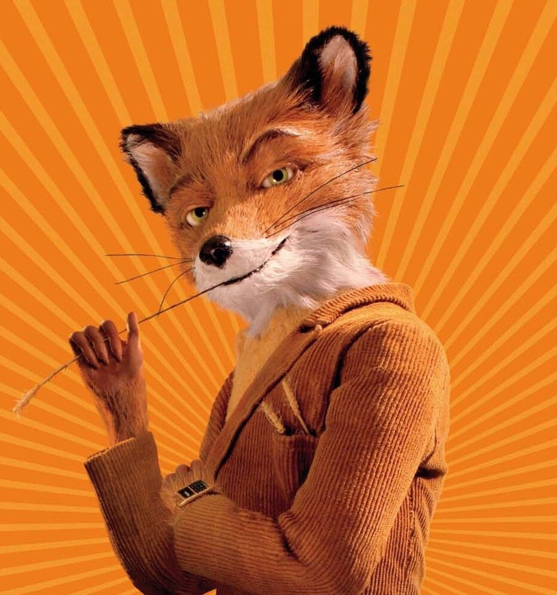

Fantastic Mr. Fox
Fantastic Mr. Fox is a stop motion animated comedy film directed by Wes Anderson, based on Roald Dahl's 1970 children's novel of the same name. The film is about a fox who steals food at night from three mean and wealthy farmers. They are fed up with Mr. Fox's theft and try to kill him so they dig their way into the foxes' home. However, the animals are able to outwit the farmers and live underground.